Galería
Algunas imágenes de la vida en nuestra finca-reserva 🌿


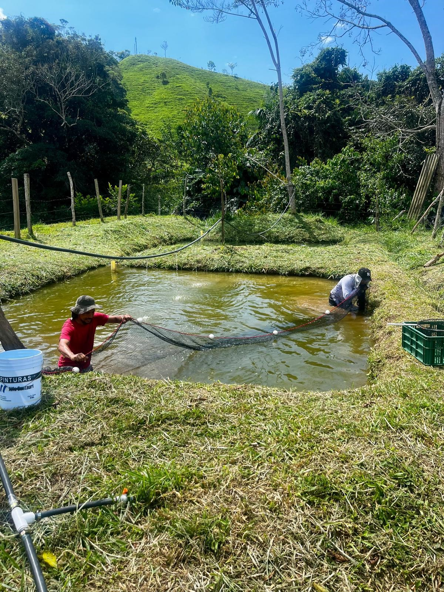
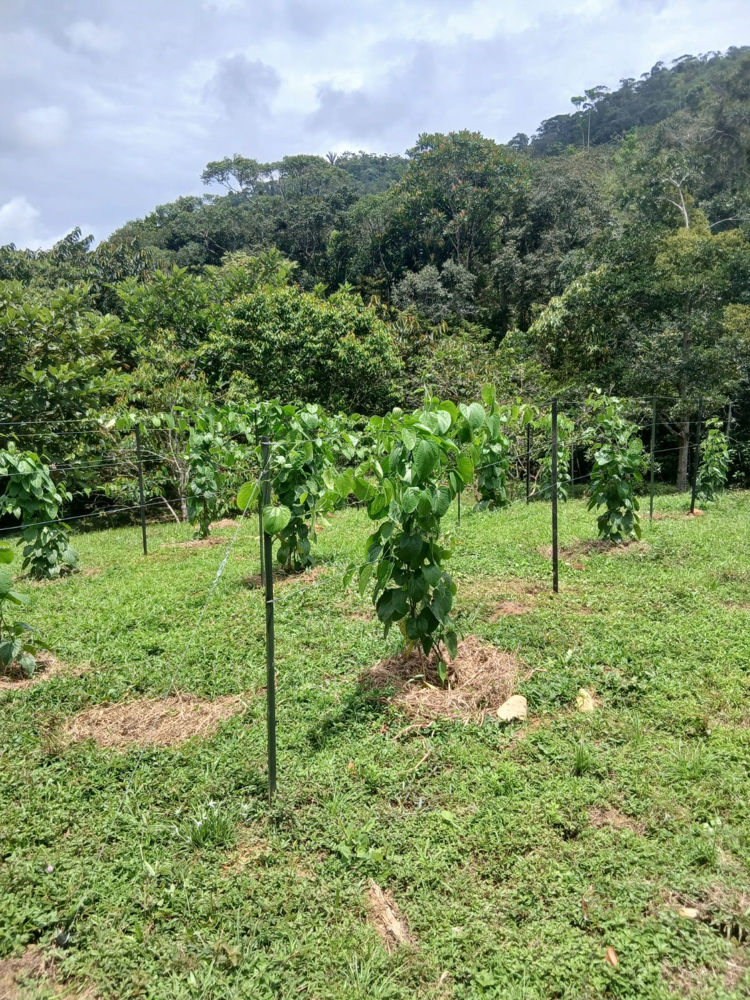
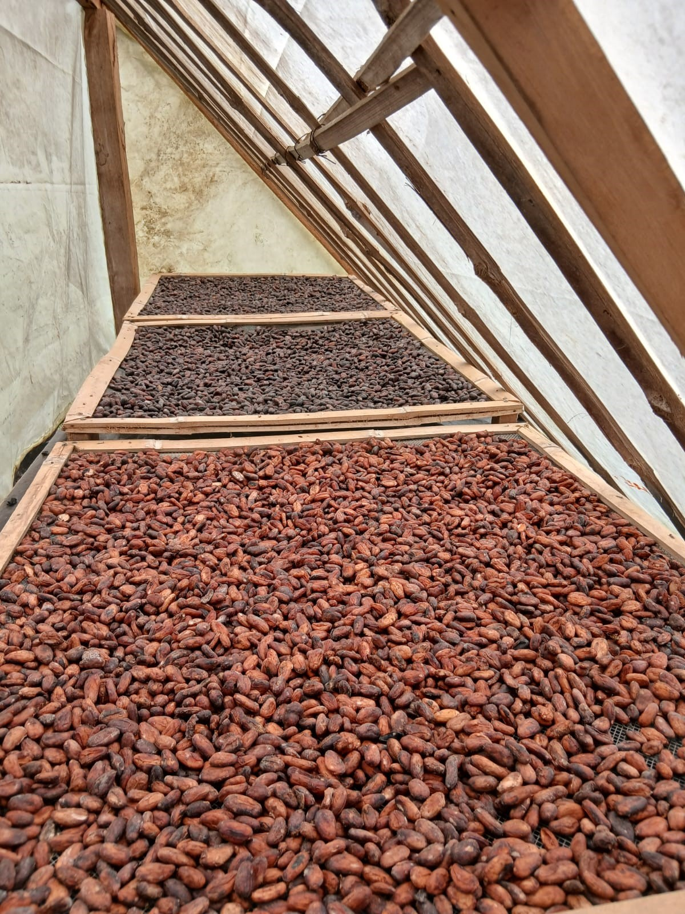
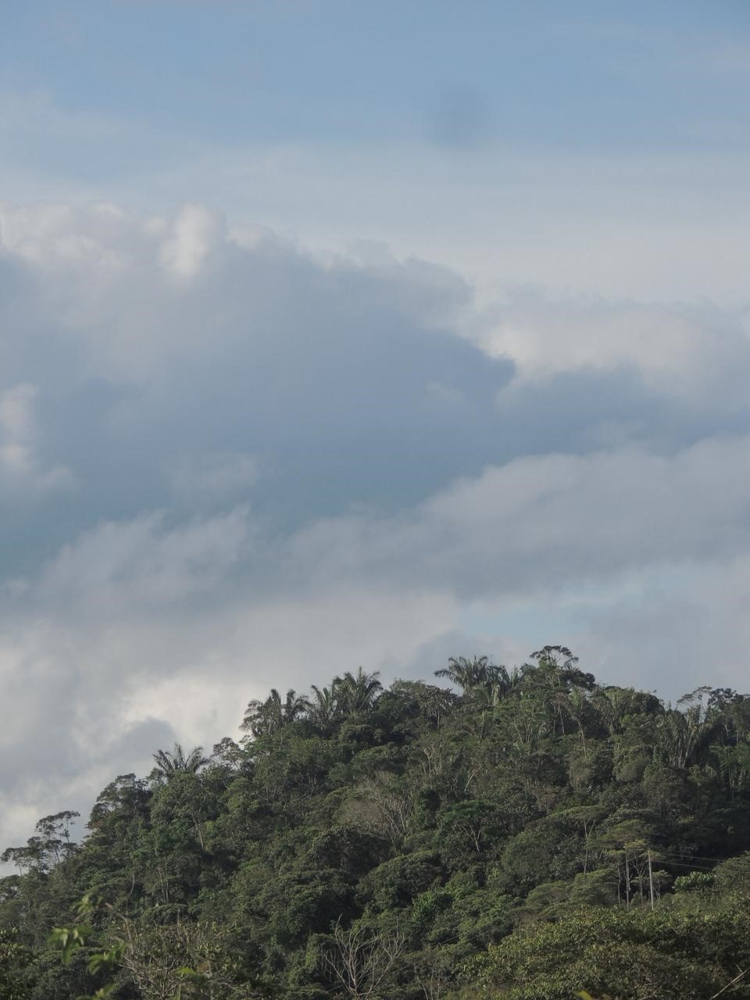
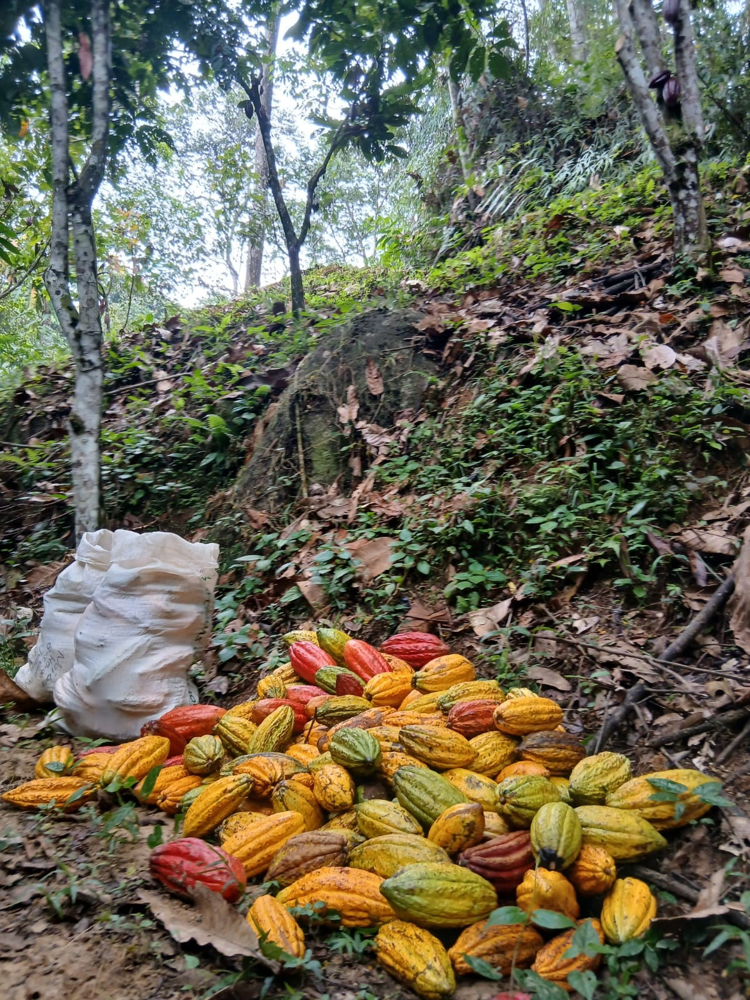
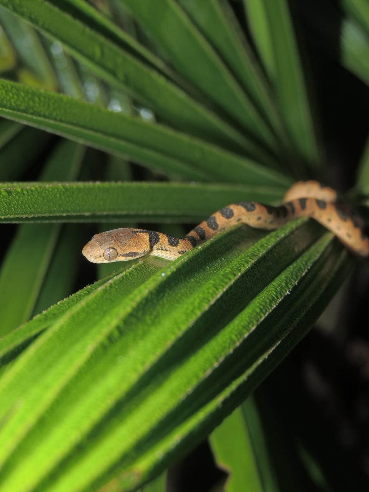
Preservamos, cultivamos y habitamos el territorio en coherencia con la vida.
Conoce el proyecto ↓Estamos ubicados en el Valle de San Blas, a 30 minutos del casco urbano de San Carlos, Antioquia. Hacemos parte de un corredor ecologico de mas de 800 hectareas constituido por reservas naturales privadas que trabajan alrededor de tres pilares fundamentales : la preservación, la soberanía alimentaria y la integración con la población local.
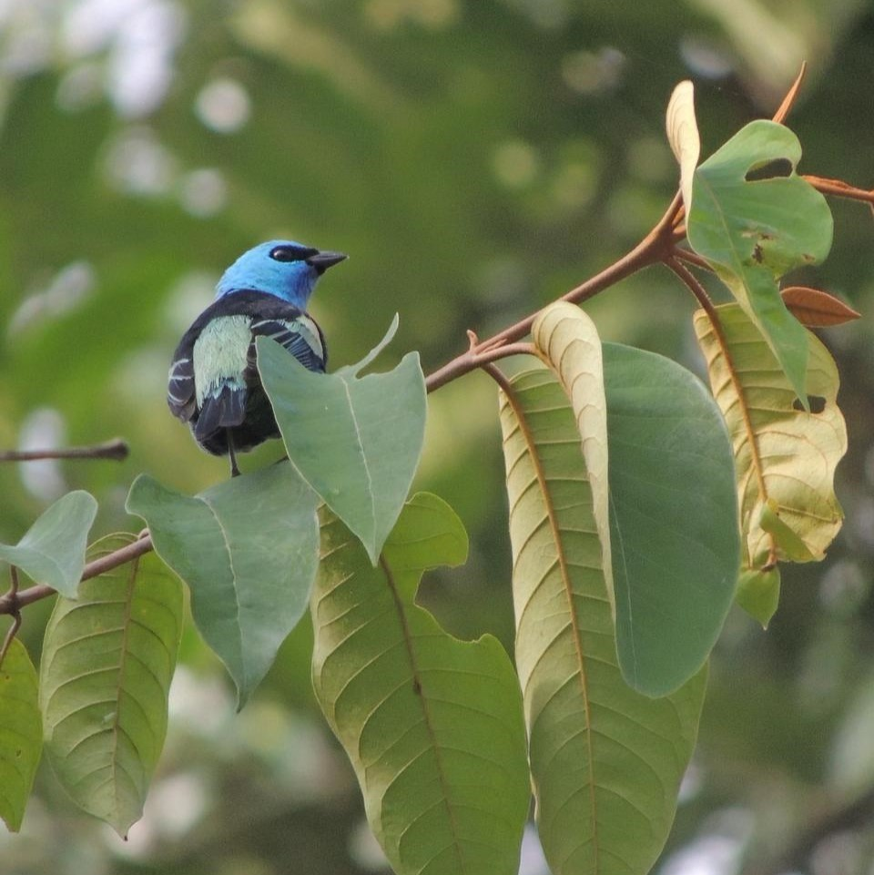
Conservamos la biodiversidad a través de nuestra Reserva Natural de la Sociedad Civil. Desarrollamos procesos de pasantias y estudios con Universidades colombianas e internacionales, y proyectamos un banco de hábitat en cooperación con la ONG Change The World y la Fundación Darien.
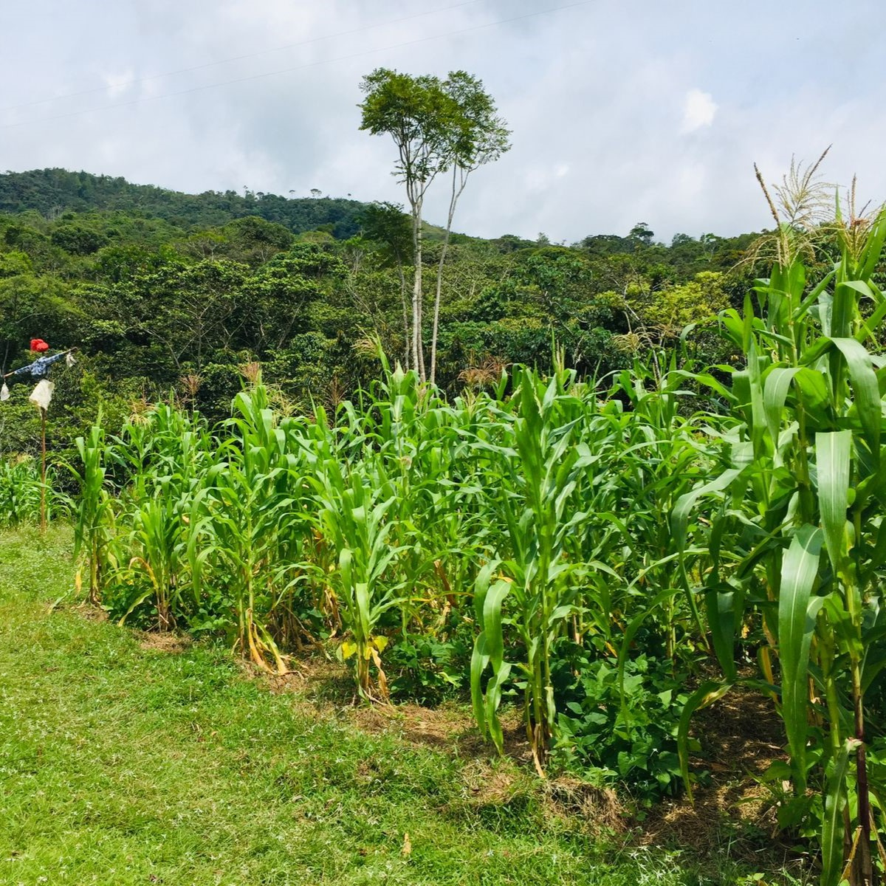
Granja integral en circuito cerrado. Producción de queso organico, carne de cerdo de calidad y tilapia negra. Cultivo y transformación de cacao y sacha inchi, nuestros productos estrella.
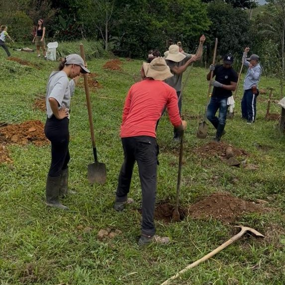
Construimos territorios sostenibles a través del trabajo colectivo, integrando comunidades locales y fortaleciendo el territorio mediante mingas y convites.
Algunas imágenes de la vida en nuestra finca-reserva 🌿






Cultivamos, transformamos y cuidamos cada producto desde la finca.
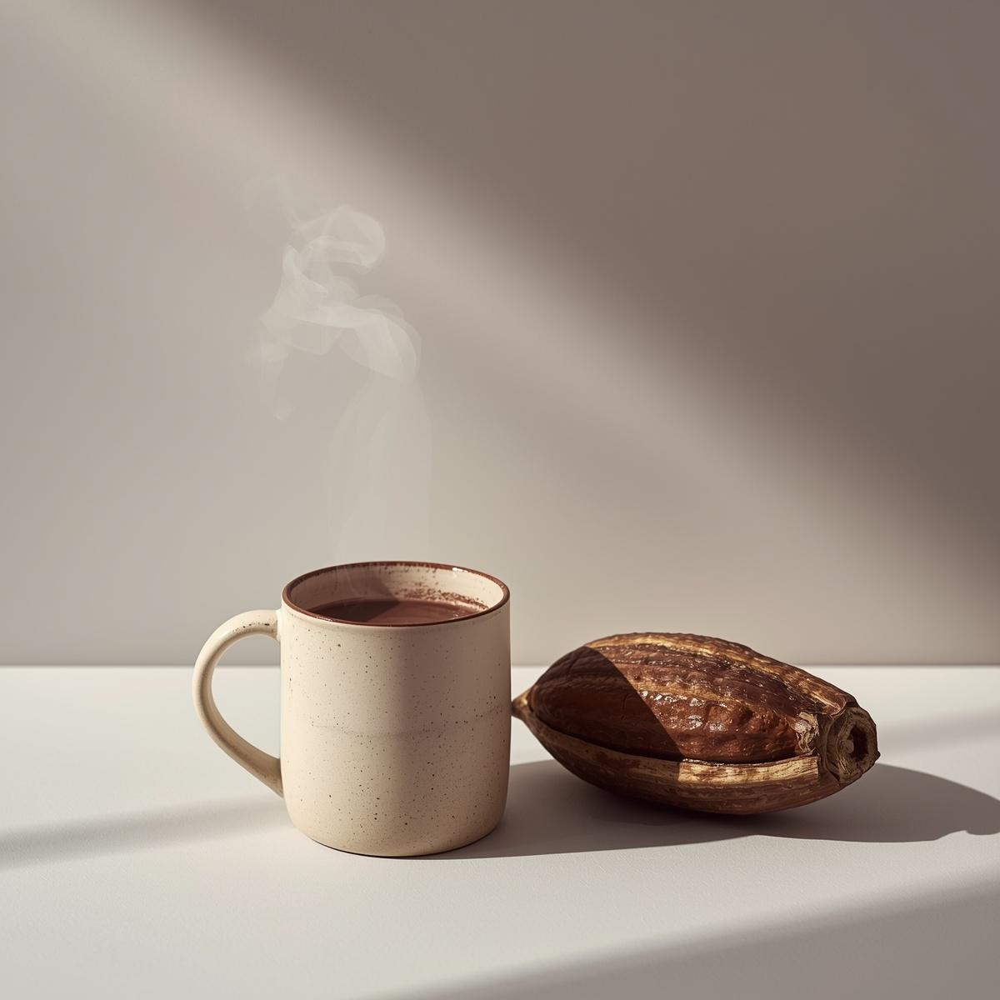
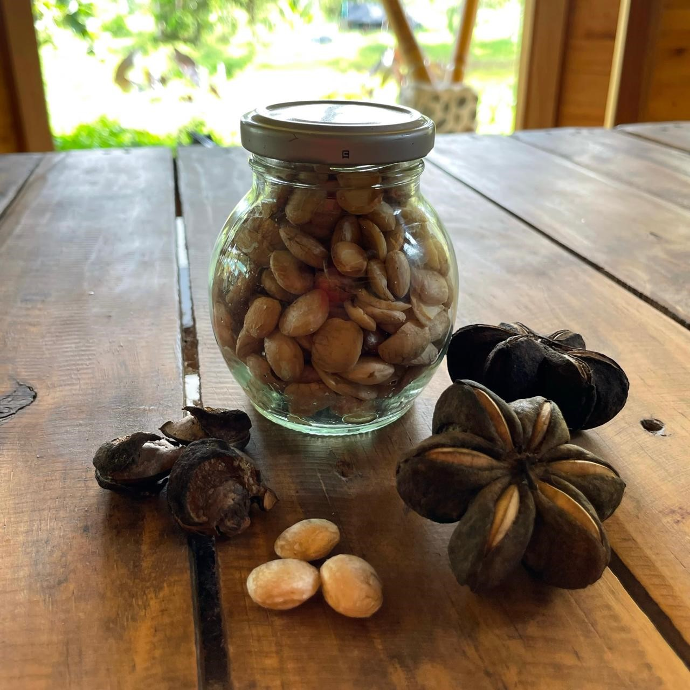
Change the World Colombia
Fundación Darién
Más de 10 años trabajando en procesos de conservación y desarrollo territorial.